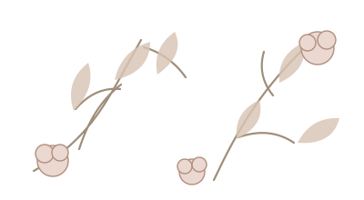
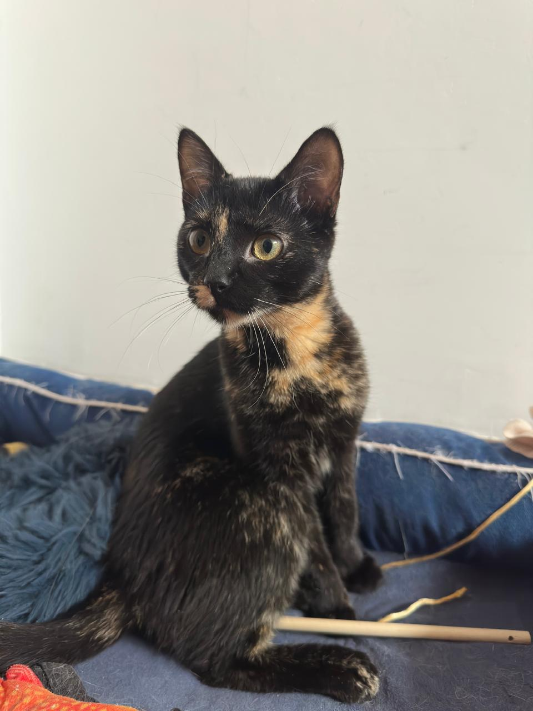
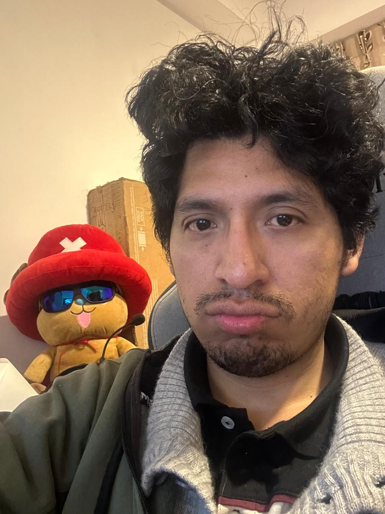
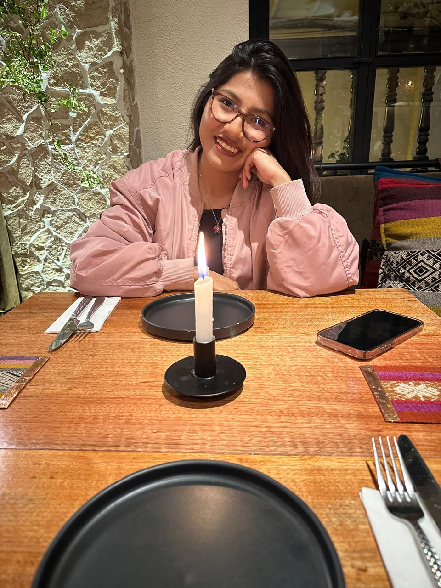
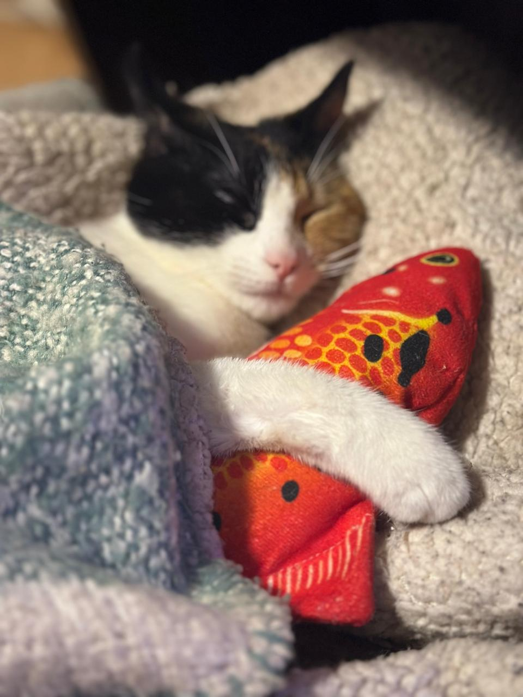

El comienzo
Una conversación inesperada
De esas que empiezan sin planes y terminan abriendo un mundo nuevo.

Tenemos algo que celebrar
14 · 02 · 2027
Al abrir la invitación comenzará nuestra canción.
Con nuestras familias y con todo el corazón
Nos casamos
“Hay personas que llegan y, sin hacer ruido, terminan siendo el lugar al que siempre quieres volver.”

Nuestros pequeños amores también forman parte de esta historia.

Meel
SilviaSave the date
14 · 02 · 2027 — Jardín del Valle, Cusco
Capítulo I
No queremos resumir lo nuestro en una cronología perfecta. Preferimos recordar esos pequeños momentos que, sin darnos cuenta, fueron construyendo una vida compartida.

De esas que empiezan sin planes y terminan abriendo un mundo nuevo.
Aprender a reír, sostenernos y celebrar incluso los días más simples.
Ahora queremos compartir con ustedes el inicio de nuestro siguiente capítulo.
“Y sin darnos cuenta, los pequeños momentos se convirtieron en nuestro para siempre.”
Recuerdos reales
Nuestras fotos reales siguen aquí, como pequeños recuerdos que le dan verdad y calidez a la invitación.
Reel de recuerdos
Ahora el reel combina recuerdos especiales de nuestros gatitos con nuestras fotos reales, dentro de un estilo más floral y romántico.
Capítulo II
Una secuencia sencilla, elegante y fácil de leer desde el celular.
Ubicación
Camino del Mirador 148, Cusco, Perú.
Dirección demostrativa. El botón puede reemplazarse por la ubicación real de la ceremonia o recepción.
Abrir en Google MapsPase personal
Este pase está configurado como demostración para 2 personas.
Tip: usa?invitado=Familia%20Ledesma&cupos=4 al final de la URL para crear pases personalizados ilimitados.
Mesa de regalos
Pero si desean acompañarnos con un detalle, hemos dejado estas opciones de ejemplo para mostrar cómo se integraría en la invitación final.
Buzón de deseos
Playlist de la boda
Confirmación de asistencia
Nos hará muchísima ilusión celebrar contigo. Completa este formulario de demostración.
Recuerdos compartidos
El QR puede apuntar a un álbum de Google Photos para que todos suban sus fotos después de la celebración.
Abrir álbum de ejemplo ↗